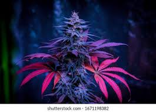
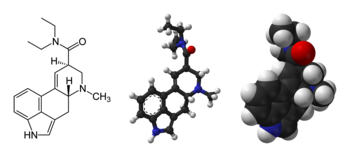
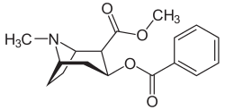

|  |
A kannabisz, más néven marihuána vagy a szlengben „fű, gyep” a kendernövény, főként az indiai kender (Cannabis indica) és a hasznos kender (Cannabis sativa) szárított, megtermékenyítetlen (termős) kendervirágzata, melyet a múltban, időnként (tévesen) neveztek vadkendernek is, annak ellenére, hogy azzal nem azonos.[megj. 1] A növény virágzatán és a kísérőleveleken nagy számban található mirigyek által termelt gyantát elválasztva a többi növényi résztől „kief”-nek nevezik. |
|  |
A lizergsav-dietilamid, rövidítve LSD vagy LSD-25 az ergolinok családjába tartozó pszichedelikus drog. Hatása alatt megváltozik az érzékelés, a gondolkodásmód és a létszemlélet. Szinesztéziát, valamint megváltozott idő-, és térérzékelést is okozhat. Leginkább rekreációs és önismereti céllal, illetve a pszichedelikus terápiához használják. Az LSD nem okoz fizikai függőséget, nincs bizonyíték agykárosító hatására, és toxicitása a küszöbdózishoz mérten rendkívül alacsony, viszont kedvezőtlen mentális hatásai lehetnek, mint például a szorongás, paranoia, vagy zavaró érzékcsalódások. |
Az LSD-t először Albert Hofmann szintetizálta 1938-ban ergotaminból, amit Arthur Stoll vont ki anyarozsból (ami egy tipikusan rozson élősködő gombafajta) és ő tapasztalta először hatásait egy véletlen mérgezést követően. Az „LSD” elnevezés a szer korai kódnevéből, az „LSD-25”-ből származik, ami a német „Lysergsäure-diethylamid” rövidítése az anyag azonosítószámával követve. Az LSD érzékeny az oxigénre, az ultraibolya sugárzásra és a klórra (főleg oldott állapotban). Száraz és sötét helyen évekig eltartható. A tiszta LSD színtelen, szagtalan, íztelen szilárd anyag. Általában szájon át veszik be. Mivel egy adag szabad szemmel szinte láthatatlan, ezért adagonként kb. 6 mm oldalméretű, perforált itatóspapír-négyzetekre („bélyegre”) impregnálják. Másik, ritkábban előforduló formája a kb. 1 mm átmérőjű apró golyó, a „microdot”. Korábban, leginkább az USA-ban kockacukorra vagy zselatinra is kenték. Az LSD az egyik legpotensebb pszichedelikus anyag, 25-30 µg a küszöbdózisa. |
|  |
A növényi eredetű kokain (C17H21NO4) molekula egy erőteljesen addiktív, stimuláló gyógyszer és helyi érzéstelenítő pszichoaktív szer, a tropán alkaloidok közé tartozó vegyület. Ezt az alkaloidot gyógyászati célra mint helyi érzéstelenítőt használták. Ma már az ellenőrizhetetlen mellékhatásai miatt csak a fül-orr-gégészek használják a központi idegrendszert erősen ingerlő hatása miatt, de ezen a területen is egyre kevesebb helyen alkalmazzák, a kábítószerek körülményes könyvelése miatt. |
A vegyületet a dél-amerikai kokacserje (Erythroxylon coca) leveleiből vonják ki, innen az alkaloid tudományos elnevezése (szlengben: hó, fehér hó, kokó, kóla, kakaó, koksz, por) Addiktológiai szakértők a kokaint az egyik legveszélyesebb ismert kábítószernek tartják. A kokacserje egyetlen hivatalos termesztője Peru. A dél-amerikai indiánok teljesítményfokozásra használják a kokalevelet. |